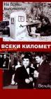

What is this site?
Stephen's Profile
Browser Extension
Stephen Klancher
Recent
Overall
Year Overview
Series
Lists
Every kilometer
List contains: 13 items, 9.8 hours.
Seasons:
1
|
Title Search (4+ characters):
Group:
None
Example Group: Me and Stephen
Who's seen it:
No filter
Everyone
No One
Anyone
Anyone Has Not
Who's commented:
No filter
Everyone
No One
Anyone
Anyone Has Not
Netflix:
No Filter
Available for Instant Watch
Netflix Link Known
Netflix Link Unknown
Missing Data:
No Filter
Runtime
Season
Release Year (YYYY) or Decade (YYYx):
Sort:
Normal
Newest Episodes First
Episodes in Order
Recently Watched First
Watched in Order
Newest Releases First
Releases in Order
Stephen Klancher
...has seen 0
...has not seen 9.8 hours
Timeline

Season 1
Shlepovete (1969)
Airs on 1969-02-14
S1 - E1 of
Every kilometer
Stephen Klancher
:
Dvete kitari
Airs on 1969-02-14
S1 - E2 of
Every kilometer
Stephen Klancher
:
Peestiya chasovnik
Airs on 1969-02-14
S1 - E3 of
Every kilometer
Stephen Klancher
:
Trite udivitelni
Airs on 1969-02-14
S1 - E4 of
Every kilometer
Stephen Klancher
:
Nasreshtni vlakove
Airs on 1969-02-14
S1 - E5 of
Every kilometer
Stephen Klancher
:
Osem bez deset
Airs on 1969-02-14
S1 - E6 of
Every kilometer
Stephen Klancher
:
Magareskata Pateka
Airs on 1969-02-14
S1 - E7 of
Every kilometer
Stephen Klancher
:
Tsigankata
Airs on 1969-02-14
S1 - E8 of
Every kilometer
Stephen Klancher
:
Bal na ostrova
Airs on 1969-02-14
S1 - E9 of
Every kilometer
Stephen Klancher
:
Velikden
Airs on 1969-02-14
S1 - E10 of
Every kilometer
Stephen Klancher
:
Vazkrastnaliya martvetz
Airs on 1969-02-14
S1 - E11 of
Every kilometer
Stephen Klancher
:
Ritzarskiya Krast
Airs on 1969-02-14
S1 - E12 of
Every kilometer
Stephen Klancher
:
Parviya den (1969)
Airs on 1969-02-14
S1 - E13 of
Every kilometer
Stephen Klancher
:
Watched an episode not known by IMDb?
Season:
-
Episode:
Date:
Comment: